Practicum 3
Grafieken maken met ggplot2
Leerdoelen
Begrijpen van de opbouw van grafieken gemaakt met
ggplot2;Aanpassen van bestaande grafieken met
ggplot2;Maken van nieuwe grafieken met
ggplot2;Kennismaken met de mogelijkheden van Quarto.
Voorbereiding
Lees hoofdstuk 5 uit het dictaat. De benodigde R-functies zijn te vinden in het dictaat (zie ook eerdere hoofdstukken en practica). Functies die niet in het dictaat besproken worden, worden gegeven in de opdracht. Het ggplot2 cheatsheet geeft een overzicht van de mogelijkheden die ggplot2 biedt.
De werking van Quarto zullen we toelichten in een video op Brightspace. Zie hiervoor ook hoofdstuk 28 uit Wickham et al. (2023). Bekijk voor je begint ook nog een keer de algemene richtlijnen voor practica.
Introductie
In de opdrachten van dit practicum ga je een aantal grafieken uit het boek IMS aanpassen of vanaf nul proberen na te maken. Hierdoor raak je bekend met de (on)mogelijkheden van ggplot2. Bij elke grafiek hoort een aparte dataset. Bij elke opdracht is aangegeven of de data bijgeleverd zijn in een databestand of dat je een package moet installeren en aanroepen. Probeer bij elke dataset/grafiek eerst goed voor jezelf helder te hebben met wat voor soort data je te maken hebt (wat is het onderwerp van de dataset, welke variabelen zijn er, wat zijn de meetniveaus).
Sla je script regelmatig op, zodat je geen code kwijtraakt. Klik hiervoor op het floppy-disk-symbool of gebruik de sneltoetsen Ctrl + S/cmd + S.
Bij sommige opdrachten vind je naast een beschrijving van de vraag ook een Hint en de Code. Dit om je te helpen als je even niet verder komt. Hoe verleidelijk het ook is om meteen naar het antwoord te gaan, doe dit niet. Houd je aan de volgorde: probeer het eerst zelf, lukt dat niet gebruik de hint, mocht je dan nog vastzitten en er echt niet uitkomen ga dan pas naar het antwoord. Dit gaat je op de lange termijn ontzettend helpen.
Opdracht 1: Internet use and life expectancy
In deze opdracht maken we de grafiek na uit opgave 11 in hoofdstuk 2 van IMS, zie Figuur 1.1. Hierin is voor een groot aantal landen de levensverwachting (life expectancy) uitgezet tegen het percentage internetgebruikers in het land (percent internet users). De data zijn afkomstig uit een databestand van de CIA en zijn in het R-project bijgeleverd als cia_factbook.csv.
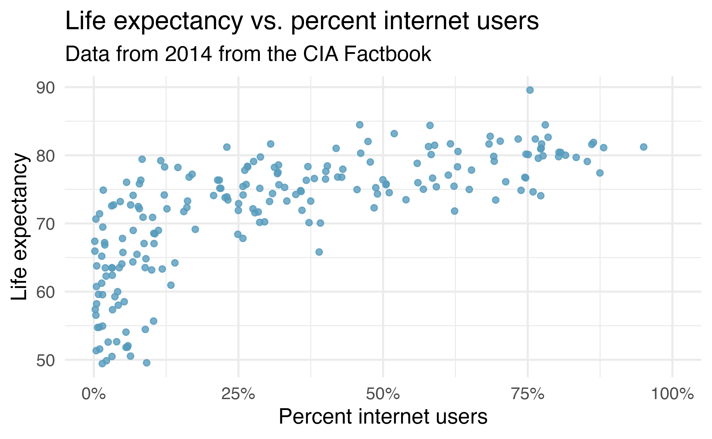
Het inlezen van de data
Bij dit practicum maken we gebruik van een aantal packages. Installeer de volgende packages (als je dat niet al eerder hebt gedaan) en roep ze aan: tidyverse, scales en ukbabynames.
Lees het databestand cia_factbook.csv in met de juiste tidyverse-functie en noem de tibble cia_factbook. Bekijk de variabelen en pas indien nodig hun meetniveau aan.
Dit heb je in het vorige practicum ook gedaan. Zie dus het practicum van vorige week.
# inlezen data
cia_factbook <- read_csv("datasets/cia_factbook.csv")Rows: 234 Columns: 12
── Column specification ────────────────────────────────────────────────────────
Delimiter: ","
chr (2): country, continent
dbl (10): area, birth_rate, death_rate, infant_mortality_rate, internet_user...
ℹ Use `spec()` to retrieve the full column specification for this data.
ℹ Specify the column types or set `show_col_types = FALSE` to quiet this message.# omzetten relevante variabelen naar factor
cia_factbook <- cia_factbook %>%
mutate(country = as.factor(country),
continent = as.factor(continent)
)ggplot2-code beter begrijpen
Met onderstaande code kun je Figuur 1.1 ruwweg namaken (de kleuren zullen anders zijn). Kopieer de code naar je script en voer de code vervolgens uit. Geef in het script in eigen woorden aan wat elke stap in de code doet. Dit kun je doen door aan het eind van elke regel een comment te plaatsen, voorafgegaan door #. Dit is hier al voorgedaan voor regel 10 in de code. Je kunt de hashtag # ook gebruiken om te achterhalen wat een deel van de code precies doet. Door # voor code te zetten wordt deze niet uitgevoerd. N.B. zorg dan wel dat je de code t/m de laatste bijbehorende + uitzet, anders zal R gaan klagen.
#code om figuur bij opgave 11 van hoofdstuk 2 uit IMS te maken
cia_factbook %>%
ggplot(aes(y = life_exp_at_birth,
x = internet_users/population
)) +
geom_point() +
scale_x_continuous(
labels = label_percent(scale = 100),
limits = c(0, 1)) +
theme_bw() + #past de achtergrond aan naar wit met zwart raster i.p.v. grijs met wit
labs(
x = "Percent internet users",
y = "Life expectancy",
title = "Life expectancy vs. percent internet users",
subtitle = "Data from 2014 from the CIA Factbook"
)Warning: Removed 27 rows containing missing values or values outside the scale range
(`geom_point()`).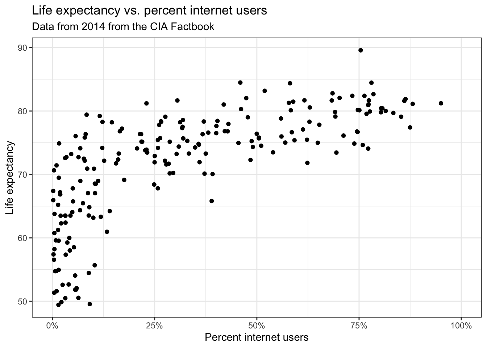
Voer eerst alle code uit en kijk naar grafiek. Schakel dan steeds een stukje code uit met # en kijk goed wat er verandert in hoe de grafiek eruit ziet. Zie verder Hoofdstuk 5.
#code om figuur bij opgave 11 van hoofdstuk 2 uit IMS te maken
cia_factbook %>% #data naar ggplot sturen
ggplot(aes(y = life_exp_at_birth, #mapt variabele naar y-as
x = internet_users/population #mapt variabele naar x-as, N.B. op basis van twee variabelen uit de data
)) +
geom_point() + #voegt de punten in de grafiek toe
scale_x_continuous( #met deze code wordt de x-as aangepast naar een percentage met bijbehorend %
labels = label_percent(scale = 100), #scale =100 zorgt dat de percentagens tot 100 lopen
limits = c(0, 1)) + #zorgt dat de x-as loopt van 0 t/m 100 (is 1 x 100 (scale))
theme_bw() + #past de achtergrond aan naar wit met zwart raster i.p.v. grijs met wit
labs( #hier worden namen voor assen gegeven en (onder)titel van de grafiek
x = "Percent internet users",
y = "Life expectancy",
title = "Life expectancy vs. percent internet users",
subtitle = "Data from 2014 from the CIA Factbook"
)Warning: Removed 27 rows containing missing values or values outside the scale range
(`geom_point()`).Interpreteren van een waarschuwing
Toen je de code bij de vorige vraag uitvoerde, kreeg je waarschijnlijk onderstaande waarschuwing. Leg uit wat R je hier vertelt en waarom deze waarschuwing ontstaat.
Warning message: Removed 27 rows containing missing values (geom_point).
Bekijk de data van de drie variabelen die in de grafiek worden gebruikt eens goed. Wat valt je op?
Er zijn 27 landen waarvoor er geen data (NA) beschikbaar zijn voor minstens een van de drie variabelen die gebruikt worden om de grafiek te maken. Dat kun je nagaan met onderstaande code. Deze 27 landen worden door ggplot2 uit de grafiek gelaten, aangezien de benodigde waarden hiervoor niet bepaald kunnen worden.
cia_factbook %>% filter(is.na(life_exp_at_birth)|is.na(internet_users)|is.na(population))| country | life_exp_at_birth | internet_users | population |
|---|---|---|---|
| Algeria | 76.39 | NA | 38813722 |
| Angola | 55.29 | NA | 19088106 |
| Nigeria | 52.62 | NA | 177155754 |
| South Sudan | NA | NA | 11562695 |
| Western Sahara | 62.27 | NA | 554795 |
| Korea, North | 69.81 | NA | 24851627 |
| Benin | 61.07 | NA | 10160556 |
| Svalbard | NA | NA | 1872 |
| Montenegro | NA | 280000 | 650036 |
| Falkland Islands (Islas Malvinas) | NA | 2900 | 3361 |
| Turks and Caicos Islands | 79.55 | NA | 49070 |
| Isle of Man | 80.98 | NA | 86866 |
| Northern Mariana Islands | 77.64 | NA | 51483 |
| Palau | 72.60 | NA | 21186 |
| Curacao | 77.98 | NA | 146836 |
| Niue | NA | 1100 | 1190 |
| Saint Pierre and Miquelon | 80.26 | NA | 5716 |
| American Samoa | 74.91 | NA | 54517 |
| Christmas Island | NA | 464 | 1530 |
| Pitcairn Islands | NA | NA | 48 |
| Norfolk Island | NA | NA | 2210 |
| Sint Maarten | 77.61 | NA | 39689 |
| Nauru | 66.40 | NA | 9488 |
| Tokelau | NA | 800 | 1337 |
| Holy See (Vatican City) | NA | NA | 842 |
| United States Pacific Island Wildlife Refuges | NA | NA | NA |
| Saint Barthelemy | NA | NA | 7267 |
Kleur van datapunten aanpassen
Geef de datapunten in de grafiek een blauwe kleur. Je kunt het commando colours() gebruiken om te zien welke kleuren standaard beschikbaar zijn in R.
Zie Sectie 5.2.
#punten blauw maken
cia_factbook %>%
ggplot(aes(y = life_exp_at_birth,
x = internet_users/population #N.B. je kunt NIET hier de mapping colour = "steelblue2" toevoegen
)) +
geom_point(colour = "steelblue2") + #kleur van de punten aangepast naar "steelblue2"
scale_x_continuous(
labels = label_percent(scale = 100),
limits = c(0, 1)) +
theme_bw() +
labs(
x = "Percent internet users",
y = "Life expectancy",
title = "Life expectancy vs. percent internet users",
subtitle = "Data from 2014 from the CIA Factbook"
)Warning: Removed 27 rows containing missing values or values outside the scale range
(`geom_point()`).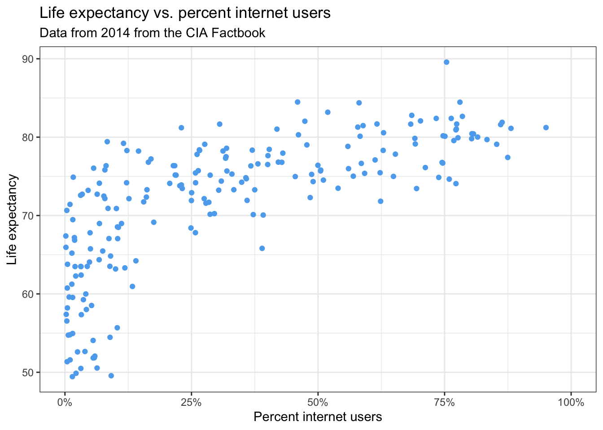
Datapunten doorzichtig maken
Een aantal datapunten in de grafiek ligt over elkaar heen. Maak deze datapunten zichtbaar door alle datapunten enigszins transparant te maken.
Hiervoor gebruik je de setting alpha. Zie Sectie 5.2.
#punten transparant maken
cia_factbook %>%
ggplot(aes(y = life_exp_at_birth,
x = internet_users/population
)) +
geom_point(colour = "steelblue2",
alpha = .8) + #transparantie ingesteld met alpha, lager getal is meer transparant
scale_x_continuous(
labels = label_percent(scale = 100),
limits = c(0, 1)) +
theme_bw() +
labs(
x = "Percent internet users",
y = "Life expectancy",
title = "Life expectancy vs. percent internet users",
subtitle = "Data from 2014 from the CIA Factbook"
)Warning: Removed 27 rows containing missing values or values outside the scale range
(`geom_point()`).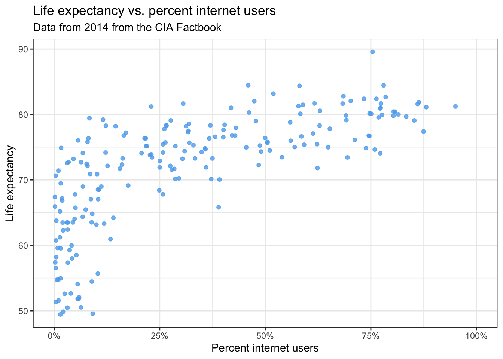
De kleur van datapunten variëren op basis van een variabele
Geef de datapunten nu een kleur op basis van het continent waartoe ze behoren. Zie je een patroon in de data?
Hiervoor zet je de kleur dus niet vast op een waarde, maar maak je een mapping aan van een variabele. Zie Sectie 5.1.
#punten kleuren op basis van continent
cia_factbook %>%
ggplot(aes(y = life_exp_at_birth,
x = internet_users/population #Je kunt eventueel ook hier de mapping colour=continent toevoegen
)) +
geom_point(aes(colour = continent), #Dit is een mapping naar een variabele, je moet dus aes() toevoegen.
alpha = .8) +
scale_x_continuous(
labels = label_percent(scale = 100),
limits = c(0, 1)) +
theme_bw() +
labs(
x = "Percent internet users",
y = "Life expectancy",
title = "Life expectancy vs. percent internet users",
subtitle = "Data from 2014 from the CIA Factbook"
)Warning: Removed 27 rows containing missing values or values outside the scale range
(`geom_point()`).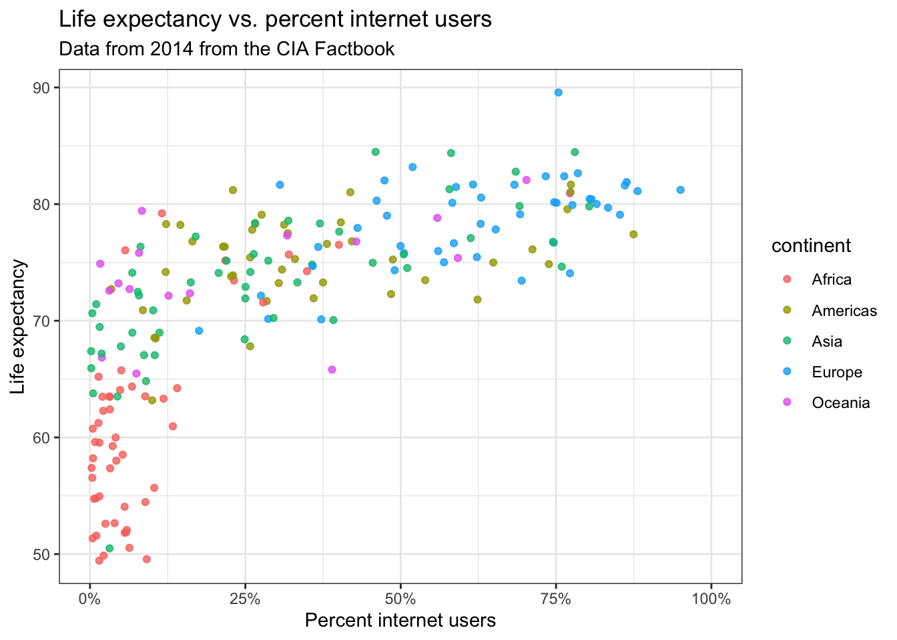
Zie je een patroon in de data? De datapunten van sommige continenten clusteren heel duidelijk (bijv. Afrika en Europa). Er lijkt een lichte trend te zijn dat hoe meer internetgebruikers hoe hoger de levensverwachting.
Een trendlijn toevoegen
Voeg nu voor de hele dataset één zwarte trendlijn toe. Behoud voor de datapunten de kleuren per continent. Wat kun je uit deze trendlijn concluderen?
Gebruik hiervoor geom_smooth(). Zie Sectie 5.2.
#een trendlijn voor hele dataset
cia_factbook %>%
ggplot(aes(y = life_exp_at_birth,
x = internet_users/population #niet hier de mapping 'colour = continent' toevoegen, dan krijg je aparte lijnen per continent
)) +
geom_point(aes(colour = continent),
alpha = .8) +
geom_smooth(color = "black") + #toevoegen van trendlijn met geom_smooth()
scale_x_continuous(
labels = label_percent(scale = 100),
limits = c(0, 1)) +
theme_bw() +
labs(
x = "Percent internet users",
y = "Life expectancy",
title = "Life expectancy vs. percent internet users",
subtitle = "Data from 2014 from the CIA Factbook"
)`geom_smooth()` using method = 'loess' and formula = 'y ~ x'Warning: Removed 27 rows containing non-finite outside the scale range
(`stat_smooth()`).Warning: Removed 27 rows containing missing values or values outside the scale range
(`geom_point()`).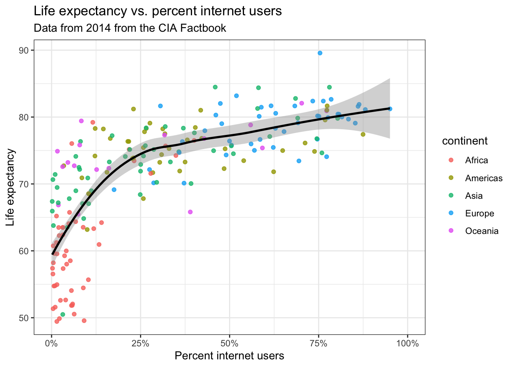
Opdracht 2: UK baby names - Fiona
In deze opdracht maken we de grafiek na uit opgave 15 in hoofdstuk 1 van IMS, zie Figuur 2.1. Hierin wordt het aantal meisjes getoond die de naam Fiona hebben gekregen. Het gaat om kinderen geboren in het Verenigd Koninkrijk sinds 2000. De data zijn afkomstig uit het package ukbabynames. Dit package moet je geïnstalleerd hebben en aanroepen voor je de opdrachten kunt maken.
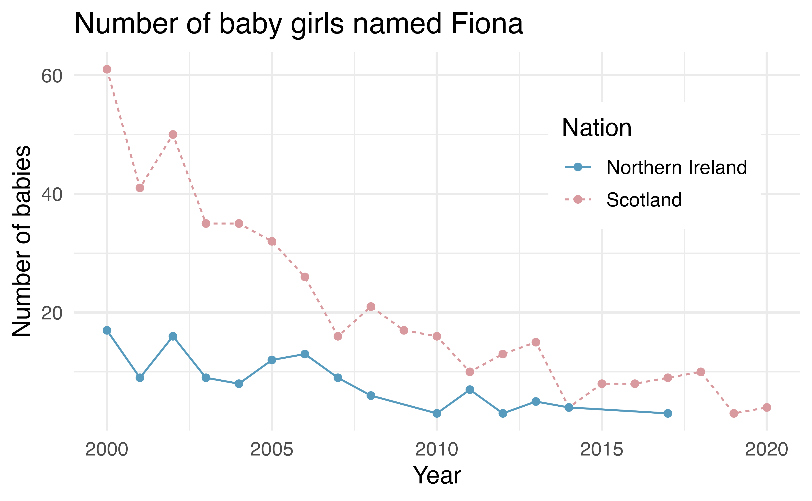
Het zichtbaar maken van de datapunten
Met onderstaande code kun je de aanzet maken voor de grafiek. Als je deze uitvoert, krijg je een lege plot (zie Figuur 2.2). Pas de code zodanig aan dat de datapunten zichtbaar worden. De lijnen en kleuren per land voegen we later toe.
Let op dat je de data eerst inperkt tot meisjes met de naam Fiona die in of na 2000 geboren zijn.
#1. bekijken van de data, geen aanpassingen nodig
head(ukbabynames)# A tibble: 6 × 6
year sex name n rank nation
<dbl> <chr> <chr> <dbl> <dbl> <chr>
1 1996 F SOPHIE 7087 1 England & Wales
2 1996 F CHLOE 6824 2 England & Wales
3 1996 F JESSICA 6711 3 England & Wales
4 1996 F EMILY 6415 4 England & Wales
5 1996 F LAUREN 6299 5 England & Wales
6 1996 F HANNAH 5916 6 England & Wales glimpse(ukbabynames)Rows: 565,817
Columns: 6
$ year <dbl> 1996, 1996, 1996, 1996, 1996, 1996, 1996, 1996, 1996, 1996, 199…
$ sex <chr> "F", "F", "F", "F", "F", "F", "F", "F", "F", "F", "F", "F", "F"…
$ name <chr> "SOPHIE", "CHLOE", "JESSICA", "EMILY", "LAUREN", "HANNAH", "CHA…
$ n <dbl> 7087, 6824, 6711, 6415, 6299, 5916, 5866, 5828, 5206, 4948, 464…
$ rank <dbl> 1, 2, 3, 4, 5, 6, 7, 8, 9, 10, 11, 12, 13, 14, 15, 16, 17, 18, …
$ nation <chr> "England & Wales", "England & Wales", "England & Wales", "Engla…#2. datapunten filteren en zichtbaar maken: toevoegen mapping en geom_point()
ukbabynames %>%
filter(name == "Fiona", sex == "F", year >= 2000) %>%
ggplot(aes(x = year, y = n)) +
geom_point() + #hier worden de punten toegevoegd
labs(
title = "Number of baby girls named Fiona",
x = "Year",
y = "Number of babies",
color = "Nation", linetype = "Nation"
) +
theme_bw() +
theme(
legend.position = c(0.8, 0.7),
legend.background = element_rect(color = "white")
)Warning: A numeric `legend.position` argument in `theme()` was deprecated in ggplot2
3.5.0.
ℹ Please use the `legend.position.inside` argument of `theme()` instead.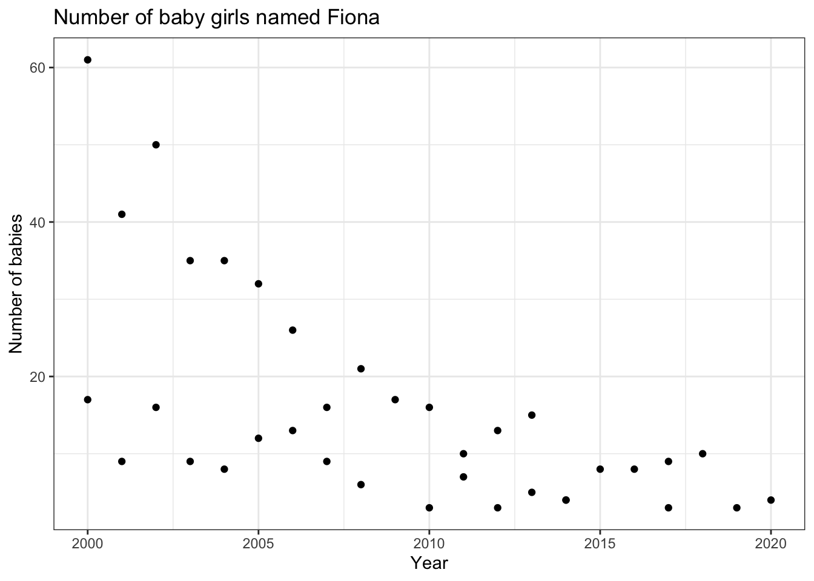
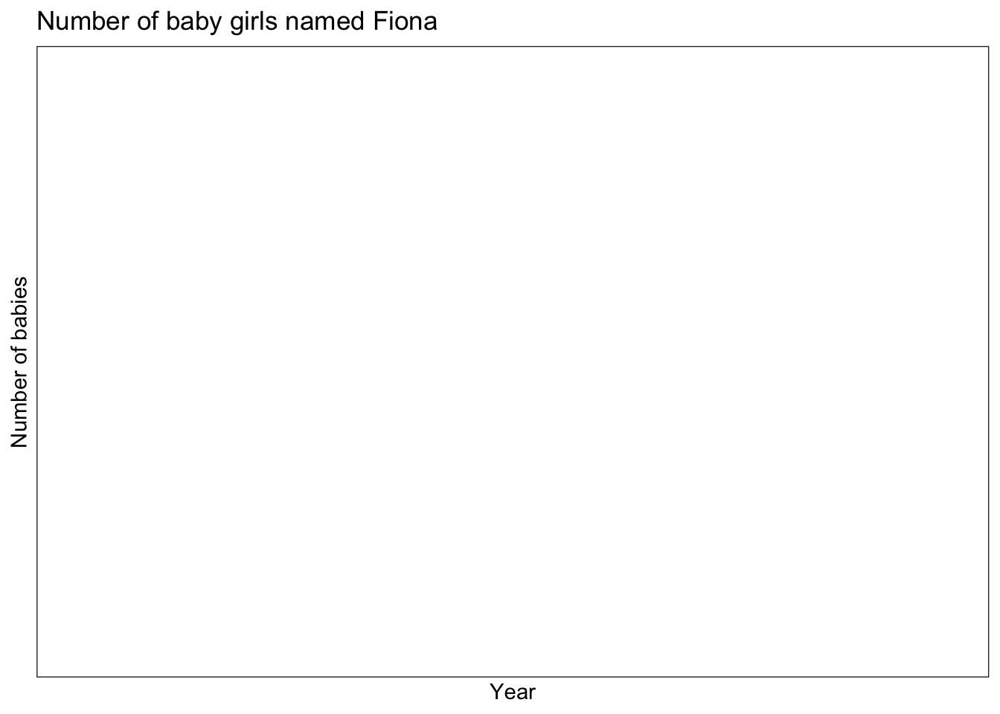
Lijnen toevoegen per groep
Voeg nu de lijnen toe. Zorg dat er aparte lijnen komen voor ieder land. Hiervoor gebruik je de aes-mapping group =.
Bedenk welk geom je hiervoor nodig hebt. Zie eventueel het ggplot2 cheatsheet voor een overzicht.
#lijnen toevoegen via geom_line()
ukbabynames %>%
filter(name == "Fiona", sex == "F", year >= 2000) %>%
ggplot(aes(x = year, y = n, group = nation)) +
geom_line() + #hier wordt een lijn toegevoegd
geom_point() +
labs(
title = "Number of baby girls named Fiona",
x = "Year",
y = "Number of babies",
color = "Nation", linetype = "Nation"
) +
theme_bw() +
theme(
legend.position = c(0.8, 0.7),
legend.background = element_rect(color = "white")
)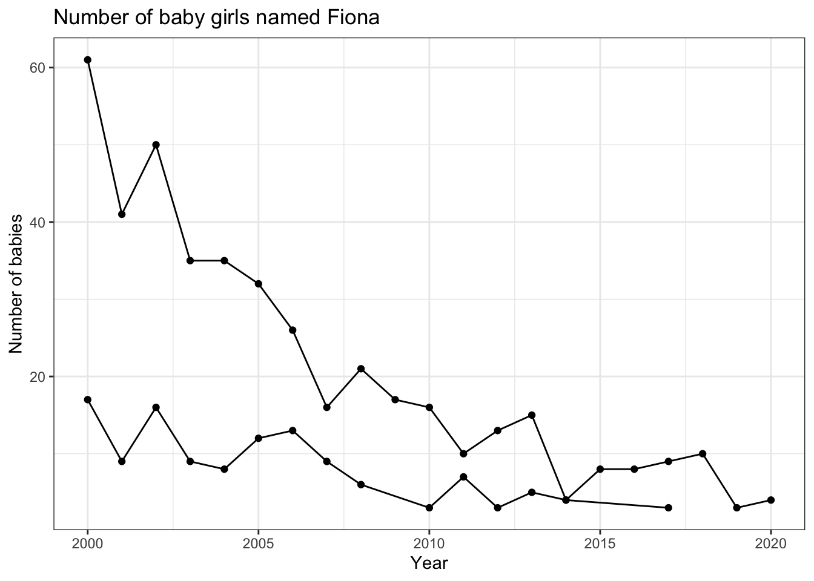
De kleur en lijnsoort aanpassen per groep
Zorg tot slot dat de datapunten en lijnen per land een kleur krijgen en dat het type lijn per land verschilt. Wat kun je op basis van deze grafiek concluderen?
Bedenk om welke aesthetics het gaat. Zie hiervoor het ggplot2 cheatsheet.
#lijnen en punten een kleur geven, lijntype aanpassen
#het lijntype pas je aan met de aes-mapping 'linetype'
ukbabynames %>%
filter(name == "Fiona", sex == "F", year >= 2000) %>%
ggplot(aes(x = year, y = n, group = nation, colour = nation, linetype = nation)) + #door toevoeging van colour en linetype is group = nation nu overbodig. Deze kun je verwijderen.
geom_line() +
geom_point() +
labs(
title = "Number of baby girls named Fiona",
x = "Year",
y = "Number of babies",
color = "Nation", linetype = "Nation"
) +
theme_bw() +
theme(
legend.position = c(0.8, 0.7),
legend.background = element_rect(color = "white")
) 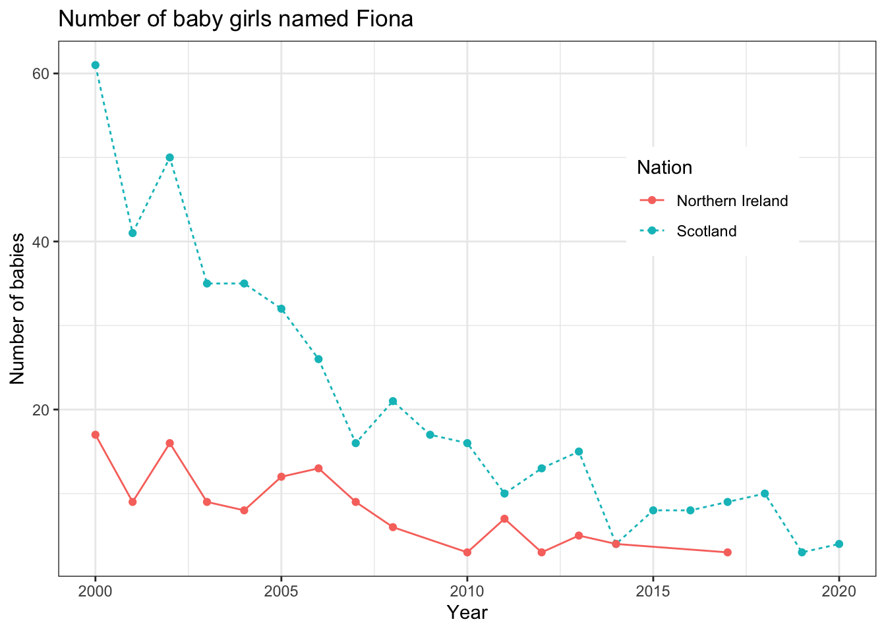
Wat kun je op basis van deze grafiek concluderen? Aan het begin van deze eeuw was de naam Fiona veel populairder in Schotland dan in Noord-Ierland. De afname is in Schotland veel sterker geweest.
Code annoteren
Bekijk de code in de uitwerking van de vorige opdracht en kopieer deze. Geef vervolgens in de code aan wat de bijdrage is van de code in regels 12, 16 en 17.
Schakel steeds een stukje code uit met # en kijk goed wat er verandert in hoe de grafiek eruit ziet.
#lijnen en punten een kleur geven, lijntype aanpassen
#het lijntype pas je aan met de aes-mapping 'linetype'
ukbabynames %>%
filter(name == "Fiona", sex == "F", year >= 2000) %>%
ggplot(aes(x = year, y = n, group = nation, colour=nation, linetype=nation)) +
geom_line() +
geom_point() +
labs(
title = "Number of baby girls named Fiona",
x = "Year",
y = "Number of babies",
color = "Nation", linetype = "Nation" #zorgt dat er een legenda verschijnt met Nation als titel i.p.v. nation
) +
theme_bw() +
theme(
legend.position = c(0.8, 0.7), #bepaalt positionering van de legenda
legend.background = element_rect(color = "white") #zet achtergrondkleur legenda op wit
) Meer data zichtbaar maken
Maak tot slot ook de datapunten van voor 2000 zichtbaar. Wat valt je op?
Kijk nog eens terug naar het begin van deze opdracht: hoe heb je toen bepaald welke datapunten zichtbaar werden?
#datapunten van voor 2000 zichtbaar maken via filter, verwijderen van 'year >= 2000'
ukbabynames %>%
filter(name == "Fiona", sex == "F") %>%
ggplot(aes(x = year, y = n, group = nation, colour = nation, linetype = nation)) +
geom_line() +
geom_point() +
labs(
title = "Number of baby girls named Fiona",
x = "Year",
y = "Number of babies",
color = "Nation", linetype = "Nation"
) +
theme_bw() +
theme(
legend.position = c(0.8, 0.7),
legend.background = element_rect(color = "white")
) 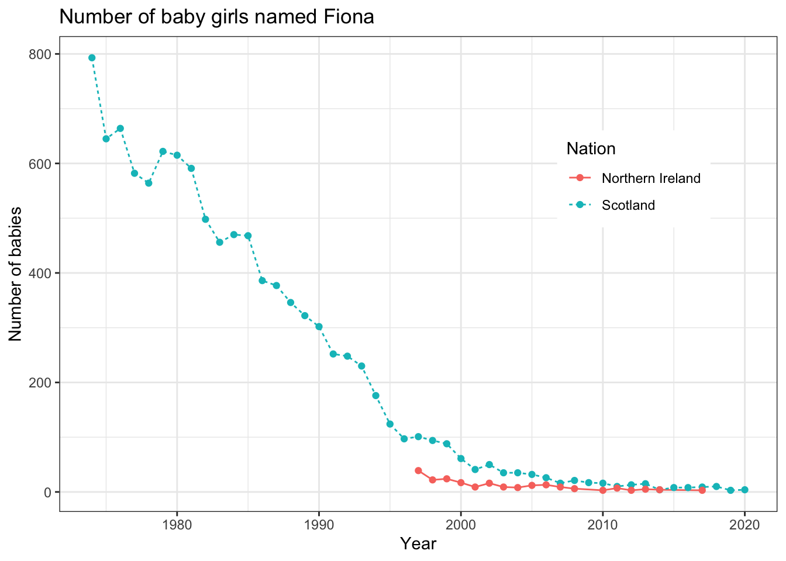
Wat valt op? Blijkbaar zijn er geen gegevens voor Noord-Ierland van voor 1997. Voor de Schotse data zien we dat de populariteit van de naam Fiona behoorlijk is teruggelopen sinds halverwege de jaren 70.
Deel 2: My first Quarto
Tot nu toe hebben we R-code steeds in een R-script gemaakt. De output werd steeds zichtbaar in R Console of het Plots-window in RStudio. Hoewel dit een handige manier is om analyses uit te werken, is het wat minder handig om analyses te delen met anderen (mede-onderzoekers of je docent). Als je bijvoorbeeld de plaatjes die je hebt gemaakt wilt delen met iemand dan zul je die apart moeten opslaan of naar een ander bestand (bijv. Word) moeten kopiëren. Dit werkt op zich prima, maar het kan wat onhandig zijn wanneer je bijvoorbeeld nog kleine dingetjes wilt veranderen (bijv. de naam van de x-as toch aanpassen). In dat geval moet je het plaatje weer opnieuw kopiëren naar het andere bestand. Er is gelukkig een handiger alternatief en dat is het werken met een Quarto (of R Markdown) document. In zo’n document komt je output (bijv. een grafiek) direct onder je code te staan en kun je daarnaast ook nog gewone tekst typen, wanneer je bijvoorbeeld antwoord op een vraag wilt geven of een toelichting wilt schrijven bij wat je ziet in de data. Het document kun je vervolgens omzetten naar bijvoorbeeld een html-bestand of een pdf-bestand. De practicumopdracht die je nu leest is bijvoorbeeld op deze manier gemaakt. In het tweede deel van dit practicum ga je zelf proberen om zo’n Quarto-document te maken. We gebruiken hiervoor je uitwerkingen van Opdracht 2 van dit practicum over de naam Fiona.
Op Brightspace vind je een video met een korte inleiding over het werken met Quarto. Je werkt vervolgens je eigen Quarto-document uit. Download hiervoor het bestand Practicum3.qmd van Brightspace en zet het in de map van je R-project. Open het bestand en bewerk het. Doorloop hierbij de volgende stappen:
Verander de titel bovenaan het document (nu My first Quarto) en voeg je eigen naam toe (nu Mijn naam).
Maak een sectie laden van benodigde packages met daarin een blok met
R-code waarin je de benodigde packages aanroept.Maak een sectie het maken van een grafiek met daarin een blok met
R-code waarin je je uiteindelijke code voor de uieindelijke grafiek uit Opdracht 2 (met de extra data) toevoegt.Zorg dat de grafiek in je output-document (het uiteindelijke
html-bestand dat ontstaat nadat je op Render hebt geklikt) een beschrijving (caption) krijgt. Om te checken of deze code nog steeds werkt kun je je cursor in het blok met code plaatsen enCtrl+Entergebruiken net als in een gewoon script.Voeg nu in gewone tekst je antwoord toe op de laatste interpretatievraag uit Opdracht 2 (Wat valt je op aan het patroon in de data?).
Render je bestand, zodat je een
html-bestand krijgt. Open dit bestand in een browser.
Gelukt? Mooi! Vanaf nu maken we uitwerkingen niet meer in een script maar in een Quarto-bestand.
Je vindt een bestand Practicum3_uitwerking.qmd op Brightspace met een voorbeelduitwerking.
Dat was het voor deze keer. Volgende week gaan we ons nog verder verdiepen in het maken van grafieken in R.